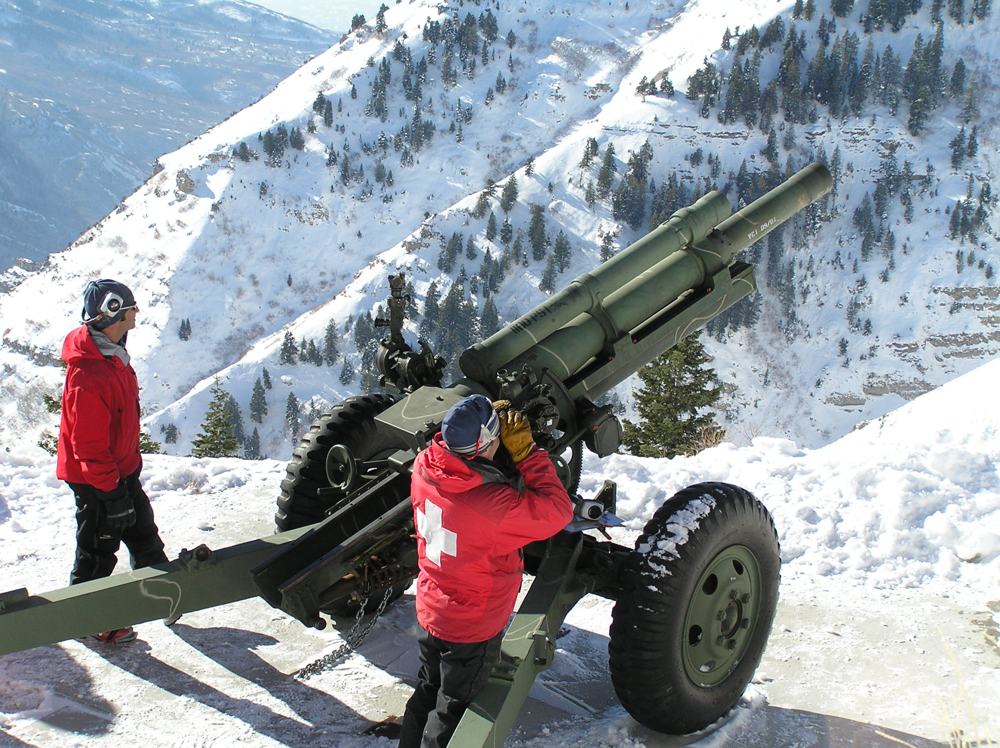

A1.5 Realistic Projectile Motion Project 2: Artillery#
A1.5.1 Problem#
Explosive cannon shells launched from a small howitzer is a common tool to prevent avalanche danger by intentionally triggering smaller avalanches in areas prone to serious avalanche danger.
Obviously, it is of great interest to make sure the cannon shell hits the target area. In fact, Utah is a dangeorus place to live: Shell shocked: Errant avalanche bomb rips Pleasant Grove home
Assume a muzzle velocity of 1000.0 m/s and a drag acceleration given by
where \(\frac{B}{m} = 4.00\times 10^{-5}\) m\(^{-1}\)
address the following objectives:
Without air drag, what is the maximum range and altitude of the shell?
Including air drag, what is the maximum range and altitude of the shell?
One thing we notice from addressing objectives (1) and (2), is the high altitude the shell is reaching. One may therefore consider potential effects of atmospheric density on the frictional force. The atmospheric density can be modeled by the adiabatic approximation \( \rho = \rho_{0}\left(1 - \frac{ay}{T_0} \right)^\alpha \) Here \(\rho_0\) is the air density at sea level, \(a = 6.5 \times 10^{−3}\) K/m is the adiabatic lapse rate, \(T_0\) is the temperature at sea level (pick an appropriate value), and \(\alpha = 2.5\) for air. The modified drag acceleration then becomes a function of altitude (or y): \( a_{drag} = \frac{\rho}{\rho_0}a_{drag_0} \) where \(a_{drag_0}\) is the original drag acceleration at sea level. Repeat the activity with the modified air drag.